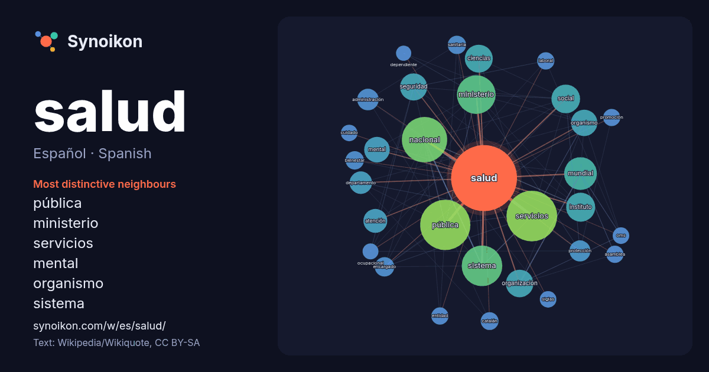

Español · Spanish · popular word
salud
“health” · The words found around it in 1407 instances from Spanish Wikipedia, Wikiquote.

Most distinctive neighbours
- pública 62×
- ministerio 46×
- servicios 41×
- mental 29×
- organismo 25×
- sistema 22×
- seguridad 21×
- instituto 21×
- atención 19×
- ciencias 19×
- organización 18×
- nacional 18×
- mundial 17×
- encargado 16×
- sanitaria 16×
- protección 16×
- bienestar 16×
- social 15×
- catalán 14×
- administración 14×
× = how many times more often than in general Spanish Wikipedia text.
Most frequent neighbours
- servicios 122
- pública 120
- nacional 98
- sistema 78
- ministerio 71
- mundial 51
- instituto 40
- social 39
- ciencias 37
- organización 36
- seguridad 35
- organismo 33
- centro 31
- mental 31
- atención 27
- departamento 24
- administración 22
- área 22
- personas 22
- problemas 21
In context
- La salud (del latín salus, -utis) es un estado de bienestar que puede ser visto a nivel subjetivo (un ser humano asume como aceptable el estado general Wikipedia snippets · Salud
- La salud pública es el conjunto de actividades organizadas por las administraciones públicas, con la participación de la sociedad, para prevenir la enfermedad Wikipedia snippets · Salud pública
- El Ministerio de Salud (MSAL) es el organismo público de la República Argentina encargado de atender las cuestiones administrativas relacionadas con el Wikipedia snippets · Ministerio de Salud (Argentina)
- El Ministerio de Salud del Perú o Minsa es el sector del Poder Ejecutivo encargado del área de salud. El 5 de octubre de 1935, día en el que se conmemoraba Wikipedia snippets · Ministerio de Salud (Perú)
- La Organización Mundial de la Salud (OMS) es el organismo de la Organización de las Naciones Unidas (ONU) especializado en gestiones políticas de prevención Wikipedia snippets · Organización Mundial de la Salud
- administración en salud (también, administración sanitaria, gerencia en salud, gestión sanitaria, gestión clínica, administración de empresas de salud, administración Wikipedia snippets · Administración en salud
- La Secretaría de Salud es una de las veintiún secretarías de Estado que, junto con la Consejería Jurídica del Ejecutivo Federal y la Agencia de Transformación Wikipedia snippets · Secretaría de Salud (México)
- La atención primaria de salud (siglas: AP o APS), según la definición dada en la Declaración de Alma-Ata, aprobada por la Conferencia Internacional sobre Wikipedia snippets · Atención primaria de salud
More Spanish words
- agua
- arte
- bosque
- caballo
- camino
- campana
- canción
- ciencia
- ciudad
- clima
- comida
- corazón
- desierto
- dinero
- dios
- espejo
- estrella
- familia
- fuerza
- gato
- historia
- invierno
- isla
- jardín
- lengua
- lluvia
- madre
- mapa
- miel
- montaña
- muerte
- naturaleza
- oro
- otoño
- pan
- perro
- puente
- reloj
- sal
- silencio
- sombra
- tiempo
- tormenta
- trabajo
- tren
- té
- verano
- verdad
- vida
Precomputed on 2026-10-09 with default settings (±5 words, medium corpus). The interactive map can refresh it with live data.